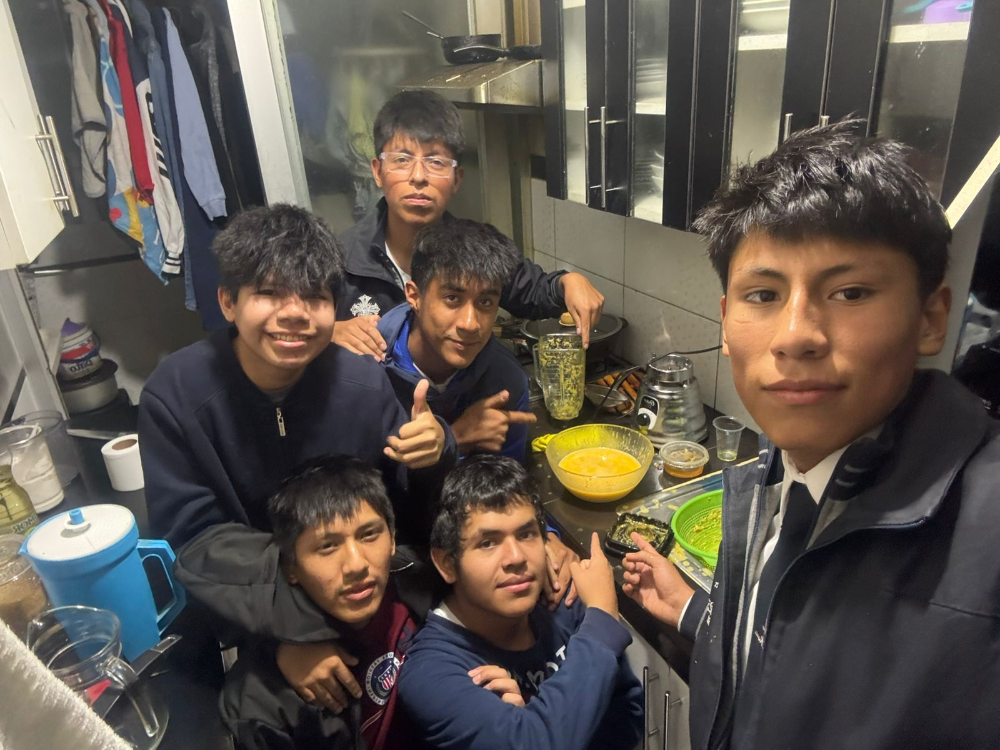

Acompaña la tos
El kion y el toque de miel ayudan a suavizar la garganta irritada y acompañan los momentos de tos constante.
PLUTONIO es una bebida pensada como apoyo natural en esos momentos de tos, malestar y cansancio. Mezcla sabores de naranja, maracuyá, kion y un toque de miel para acompañar tu recuperación con buena vibra.
⚠️ Importante: PLUTONIO es un producto ficticio de un proyecto escolar y no sustituye la consulta médica ni tratamientos profesionales.

Inspirado en remedios caseros con kion y miel, pero convertido en una bebida lista para tomar.
El kion y el toque de miel ayudan a suavizar la garganta irritada y acompañan los momentos de tos constante.
La combinación de sabores cítricos y kion puede brindar una sensación de alivio cuando te sientes con malestar.
Una bebida pensada para darte un impulso suave y refrescante mientras descansas y te cuidas.
Cada ingrediente de PLUTONIO está pensado para aportar sabor, frescura y ese toque casero que todos conocemos.
Aporta un sabor cítrico clásico y refrescante, ideal para tomar en cualquier momento del día.
Le da un toque tropical y aromático que hace que PLUTONIO se sienta diferente a cualquier bebida común.
Conocido como jengibre, tradicionalmente usado en infusiones para acompañar la tos y el malestar de garganta.
Endulza de forma natural y aporta esa sensación suave en la garganta que todos recordamos de los remedios caseros.

Somos un grupo de amigos y estudiantes que decidió convertir una idea de remedio casero en un proyecto escolar con identidad propia. Entre tareas, trabajos y risas en la cocina, nació PLUTONIO, una bebida ficticia que busca representar esa mezcla de cuidado, ciencia y creatividad que vivimos día a día.
Nuestro objetivo no es vender un producto real, sino mostrar cómo una simple idea puede transformarse en una marca, una historia y una experiencia diseñada con corazón.
Escribe tus datos en los recuadros y generaremos un mensaje personalizado que se enviará (simulado) al WhatsApp 949 287 245.